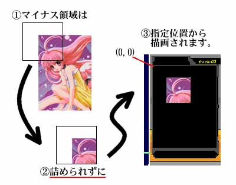
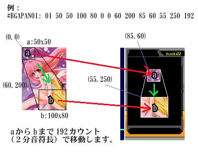

基本構造
基本構造
DTXファイル（拡張子 .DTX ）は、「ヘッダ記述」と「オブジェクト記述」からなるテキストファイルです。
ヘッダ記述 曲全体に関する情報（タイトルや使用する音声ファイルなど）を定義する行です。 オブジェクト記述 譜面に関する情報（どのチップをどこに配置してどの音を鳴らすか）を定義する行です。チャンネルを使ってオブジェクトの機能を指定します。 
DTXファイルの記述例基本的に、DTXファイルの書式はBMSに準拠しています。しかし、BMSのすべての機能を実現しているわけでもなく、また独自の拡張を施していることもあり、DTXMania 用の演奏データが他のBMSプレイヤーで正常に演奏できるという保証はありません。あらかじめご了承下さい。
未対応のヘッダや '#' で始まらない行は無視します。また、行中に ';' が現れた場合は、それ以降行末までをコメントと見なし無視します。
ヘッダ記述
- #TITLE: <曲のタイトル>
- 演奏データのタイトルを記述します。
- #ARTIST: <アーティスト名>
- 演奏データのアーティスト名を記述します。アーティスト名は、曲選択画面で選択された曲のタイトルの下に表示されます。
- #COMMENT: <コメント>
- 演奏データに対するコメントを記述します。コメントは、曲選択画面で、選択された曲のタイトルの下（アーティスト名のもひとつ下）に表示されます。
- #PANEL: <パネルコメント>
- BGA領域下部のパネルエリアに表示するコメントを記述します(DTXMania027以降)。#PANEL: がない場合は、パネルエリアには #TITLE の内容が表示されます。
- #DLEVEL: <レベル>
- ドラムの難易度を、1(易しい)〜100(難しい)で示します。ただし、10以下の数値を指定した場合は自動的に10段階指定（1〜10）と見なし、値を10倍して使用します(10〜100になる)。また、G2D データの場合は10以下の値であっても常に100段階と見なされます。
- #GLEVEL: <レベル>
- ギターの難易度を、1(易しい)〜100(難しい)で示します。ただし、10以下の数値を指定した場合は自動的に10段階指定（1〜10）と見なし、値を10倍して使用します(10〜100になる)。また、G2D データの場合は10以下の値であっても常に100段階と見なされます。
- #BLEVEL: <レベル>
- ベースの難易度を、1(易しい)〜100(難しい)で示します。ただし、10以下の数値を指定した場合は自動的に10段階指定（1〜10）と見なし、値を10倍して使用します(10〜100になる)。また、G2D データの場合は10以下の値であっても常に100段階と見なされます。
- #BPM: <BPM値>
- 演奏データのBPM（Beat per Minute；１分間に４分音符が何個あるか）を指定します。小数での指定が可能です。
- #BPMzz: <BPM値>
- 演奏データのBPMを指定します。(zzの部分がない)#BPM: が演奏開始時のBPMの値を指定するのに対し、#BPMzz: では、拡張再生テンポチャンネル(08)で使用するための値を定義します。小数での指定が可能です。zz は36進数表記で 01〜ZZ までを指定することができます。
- #BASEBPM: <BASEBMP値>
- 演奏データのBPMの基本値を指定します。チャンネル03, 08で指定したすべてのBPMにこの基本値が加算されます（#BPM: で指定した値には加算されません）。
例：
#BASEBPM: 100
#01003:FF- 小節10の先頭で、BPM=255+100=355になります。
- 小節10の先頭で、BPM=255+100=355になります。
- #MIDIFILE: <MIDIファイル名>
- BGMとして鳴らすMIDIファイルを指定します。MIDIファイルは、演奏ファイルのあるフォルダを基点として相対パスで指定します。
現在は機能していません。
- #STAGEFILE: <STAGEファイル名>
- 曲が選択されて演奏データがロードされている間に表示する画像（640x480ドット以内のBMP, JPEG, PNGファイル；それ以上のサイズは右下方からカット）を指定します。
- #PREVIEW: <PREVIEWファイル名>
- 曲選択画面でカーソルが合わされた時に鳴らす音声ファイルを指定します。
- #PREIMAGE: <PREVIEW画像ファイル名>
- 曲選択画面でカーソルが合わされた時に表示する画像ファイルを指定します。BMP, PNG, JPEGが使用できます。サイズは 204x269 で、これより小さい場合は中央に表示され、これより大きい場合は右下から切り捨てられます。
- #BACKGROUND: <背景ファイル名>
- 演奏画面の背景となる画像を指定します。この画像は、DTXMania の演奏フレーム画面と半透明合成されて表示されます。画像サイズは640x480ですが、これより小さい場合には同じ画像が繰り返し並べて表示されます。BMP, JPEG, PNG が使用できます。
- #WALL: <背景ファイル名>
- #BACKGROUND と同等です。しかし、#BACKGROUND は BandJAM では認識されないため、#WALL → #BACKGROUND の順番で別々のファイルを指定することで、DTXMania と BandJAM で別々の画像を背景にすることが可能です。（DTXManiaではどちらも認識し、後から出てきた方が優先となります。）
- #WAVzz: <WAV(MP3)ファイル名>
- 番号 zz に登録するWAVファイルを指定します。zz は36進数表記で 01〜ZZ までを指定することができます。また、WAVファイルの代わりにMP3ファイルを指定することも可能です。（MP3の場合、プレイヤーのパソコンにMP3 CODEC がインストールされてなければ、演奏に失敗します。）ここで指定したファイルは、ドラムパートに使用された場合は最大２音まで重ねて発声されますが、ギターならびにベースパートに使用された場合は重ねて再生されません（次の再生を始める時に以前の再生が停止します）。
#WAVzz: で登録した番号 zz は、WAVE関連チャンネル(01,11〜19,etc.)で使用されます。
- #VOLUMEzz: <音量割合>
- 番号 zz に登録されたWAVファイルの音量を指定します。zz は36進数表記で 01〜ZZ までを指定することができます。音量割合には、#WAVzz で指定したWAVファイルの原音を 100% とした時の再生音量を 0〜100 [%] で指定します（10進数表記）。音量を100%を超えて増幅することは出来ません。
- #WAVVOLzz: <音量割合>
- #VOLUMEzz と同等です。しかし、GDAC2 では #WAVzz と混同されて誤動作するため、#VOLUMEzz の方を使用することをお勧めします。
- #PANzz: <方向割合>
- 番号 zz に登録されたWAVファイルのパン（再生位置）を指定します。zz は36進数表記で 01〜ZZ までを指定することができます。方向割合には、-100〜100 の数値を10進数で指定します。-100 で完全に左、0 で中央、100 で完全右の位置になります。
- #WAVPANzz: <音量割合>
- #PANzz と同等です。
- #BMPzz: <画像ファイル名>
- 番号 zz に登録する画像ファイルを指定します。BMP, JPEG, PNG が使用できます。サイズは 278x355 で、これより小さい場合は上中央にそろえられ、これより大きい場合は右下から切り捨てられます。 zz は36進数表記で 01〜ZZ までを指定することができます。
#BMPzz:で登録した番号 zz は、BGA関連チャンネル(04,07,55〜60)で使用されます。
- #BGAzz: <BMP番号> <x1> <y1> <x2> <y2> <ox> <oy>
- 番号 zz に登録する拡張BGA領域を指定します。拡張BGAとは、ある画像の一部分だけを好きな場所に表示できる機能です。
#BGAzz:で登録した番号 zz は、BGA関連チャンネル(04,07,55〜60)で使用されます。
zz 36進数表記で 01〜ZZ までを指定することができます。 BMP番号 #BMPzzで指定されたBMP番号(01〜ZZ)が入ります。必ず２桁で記述して下さい。 x1, y1 BGAの左上座標(BMPの左上隅が(0,0))を指定します。 x2, y2 BGAの右下座標(BMPの左上隅が(0,0))を指定します。 ox, oy BGAの表示座標(DTXManiaのBGA領域の左上隅が(0,0))を指定します。
例：
#BGA01: 01 -40 -30 60 70 0 0
→ #BMP01 で指定した画像の (-40,-30)-(60,70) の領域を、DTXManiaのBGA領域の (0,0) の位置から表示します。
注：
x1あるいはy1が負数である場合は、先にそれを 0 にクリッピングし、クリッピング後の領域の左上隅が (ox, oy) から表示されます。（BM98方式）

#BGA でのクリッピングと位置決め
- #BGAPANzz: <BMP番号> <sw> <sh> <ew> <eh > <ssx> <ssy> <sex> <sey> <dsx> <dsy> <dex> <dey> <len>
- 番号 zz に登録するBGAイメージパンを指定します。
イメージパンとは、ある画像の一部分（領域）を、初期位置から終了位置まで一定の速度で移動させながら表示する機能です。このとき、位置だけではなく領域の大きさも変更させることができます。（ただし領域の拡大縮小機能はありません。）
#BGAPANzz:で登録した番号 zz は、BGA関連チャンネル(04,07,55〜60)で使用されます。
zz 36進数表記で 01〜ZZ までを指定することができます。 BMP番号 #BMPzzで指定されたBMP番号(01〜ZZ)が入ります。必ず２桁で記述して下さい。 sw, sh 領域サイズ（幅、高さ）の初期値を指定します。 ew, eh 領域サイズ（幅、高さ）の終了値を指定します。 ssx, ssy 画像側の初期位置（画像の左上を(0,0)とする）を指定します。 sex, sey 画像側の終了位置（画像の左上を(0,0)とする）を指定します。 dsx, dsy 表示側の初期位置（DTXManiaのBGA領域の左上を(0,0)とする）を指定します。 dex, dey 表示側の終了位置（DTXManiaのBGA領域の左上を(0,0)とする）を指定します。 len 初期位置から終了位置への移動にかける合計時間をカウント単位で指定します。小節長倍率によらず、常に１小節＝384カウントになります。（小節長倍率 0.5 の時は、通常(1.0)時に比べ 2 倍の速さで移動します。）
注：
x1あるいはy1が負数である場合は、それを 0 にクリッピングしない状態で表示位置を決定します。（DTXMania方式；#BGA とは異なりますのでご注意下さい。）

#BGAPAN でのクリッピングと位置決め
例：
#BGAPAN01: 01 50 50 100 80 0 0 60 200 85 60 55 250 192
→ #BMP01 で指定した画像について、
- 初期： BMP01 の (0,0)-(0+50,0+50) の領域を、DTXManiaのBGA領域の (85,60)-(85+50,60+50) に表示します。
- 終了： BMP01 の (60,200)-(60+100,200+80) の領域を、DTXManiaのBGA領域の (55,250)-(55+100,250+80) に表示します。
→ 初期から終了まで、各領域のサイズは線形に変化します。
- 初期から終了まで、192カウント（２分音符）の時間をかけます。

#BGAPAN の例
- 初期： BMP01 の (0,0)-(0+50,0+50) の領域を、DTXManiaのBGA領域の (85,60)-(85+50,60+50) に表示します。
- #AVIzz: <AVIファイル名>
- 番号 zz に登録するAVIファイルを指定します。zz は36進数表記で 01〜ZZ までを指定することができます。
#AVIzz:で登録した番号 zz は、動画再生チャンネル(54)で使用されます。
- #VIDEOzz: <AVIファイル名>
- #AVIzz と同等です。
- #MIDINOTE: <ON|OFF>
- 通常、可視オブジェクトチャンネルで指定される値はWAV番号ですが、MIDINOTEをONに設定すると、WAV番号であると同時にMIDIノートでもあるとみなされ、WAV発声と同時にMIDI OUT Ch.10 に NoteOn 信号が送信されます。ただし、MIDIから入力されてヒットしたオブジェクトについては、WAVのみの発声となります。
- #RANDOM <数値>
- 1〜<数値>までの整数の乱数を生成します。この乱数は #IF タグで使用されます。数値は10進数表記で１以上を指定可能です。
- #IF <数値> 〜 #ENDIF
- #RANDOMタグで生成した乱数が<数値>と等しい場合に、#IF〜#ENDIF までのデータを有効とします。乱数が<数値>と等しくない場合には、#IF 〜 #ENDIF はスキップされます。最大255重までの入れ子が可能です。
例：
#RANDOM 3
#IF 1
#WAV01: voice1.mp3
#ENDIF
#IF 2
#WAV01: voice2.mp3
#ENDIF
#IF 3
#WAV01: voice3.mp3
#ENDIF
- #RANDOM で生成された乱数が 1 の場合は voice1.mp3、2 の場合は voice2.mp3、3 の場合は voice3.mp3 が、WAV01 に割り当てられます。
- 生成される数はデータが演奏されるたびにランダムに変わるので、WAV01 の音もまた演奏するたびランダムに変わることになります。
ただし、DTXMania が曲データの読み込みを高速化するための仕様上、ヘッダ情報に関する #RANDOM はほとんど無効です。 - #RANDOM で生成された乱数が 1 の場合は voice1.mp3、2 の場合は voice2.mp3、3 の場合は voice3.mp3 が、WAV01 に割り当てられます。
オブジェクト記述
- #nnncc: <オブジェクトリスト>
- 小節 nnn におけるチャンネル cc の演奏情報をオブジェクトリストとして指定します。nnn は10進数表記で 000〜999※まで、cc は16進数表記で 01〜FF までを指定可能です（ccについては、次の「チャンネル情報」を参照）。
オブジェクトリスト中の任意の個所に、'_' 記号を使うことができます。この記号は見やすさ向上のためにGDAで導入されたもので、読みこみ時には無視されます。
※... 041a以降では、百の位だけ36進数であり、000〜Z99 まで使用することができる。
チャンネル情報
- 00 [テンポの指定(16進数／浮動小数)]
- BMSで廃止になったため、非対応。チャンネル03をご使用下さい。
- 01 [バックコーラス]
- その位置で自動的に再生するWAVの番号を指定します。
- 02 [小節の短縮化(10進数／浮動小数)]
- １小節の長さを、４分の４拍子を基準とした倍率で指定します。
注：
小節が短縮されても拍線（１拍ごとに現れる薄い白線）の間隔は変わりません。ただし、小節線（通常は４拍ごとに現れる明るい白線）の間隔は、短縮倍率に応じて変化します。これにより、たとえば４分の３拍子などの自然な表現が可能です。
例：
#01902:0.75
#01911:010101
#01912:010101010101010101
- １９小節目からは４分の３拍子（４分の４拍子の0.75倍）となり、拍線は小節線と小節線の間に３本しか現れなくなります（拍線同士の間隔は４分の４拍子のときと同じ）。
- 上記の例の場合、１９小節目にハイハットが４分音符で３拍入り、スネアの３連符が３拍分入ります。
- １９小節目からは４分の３拍子（４分の４拍子の0.75倍）となり、拍線は小節線と小節線の間に３本しか現れなくなります（拍線同士の間隔は４分の４拍子のときと同じ）。
- 03 [再生テンポ(BPM/１分間の４分音符の数）]
- その位置でBPMを変更します。値は16進数で指定しますのでご注意下さい（36進数ではありません）。また、このチャンネルで指定した値には #BASEBPM: で指定した値が加算されて用いられます。
例：
#03103:0070
→31小節目の3拍目から、BPMを112に変更します。(BASEBPM=0の時)
- 04 [BGA（バックグラウンドアニメーション）]
- その位置でBGA領域に表示する画像の番号（#BMPzz:、#BGAzz:、#BGAPANzz: で設定したzz）を指定します。
#BPM、#BGA、#BGAPAN 間で同じ番号が存在する場合には、#BGAPAN → #BGA → #BMP の順に優先されます。
DTXManiaの場合、BGA領域のサイズは278x355ドットです。これより小さいサイズの画像は、左右は中央揃え、上下は上詰めで表示されます。はみ出した領域はカットされます。一度表示された画像は次の指定がない限り表示されたままになります。
- 05 [Extend Object]
- 非対応。対応の予定なし。
- 06 [MISSアニメの変更]
- 非対応。（MISS画面があるとうっとおしいので対応したくない…。）
- 07 [レイヤBGA]
- その位置でBGA領域に表示するレイヤー画像の番号（#BMPzz:、#BGAzz:、#BGAPANzz: で設定したzz）を指定します。
レイヤー画像は、チャンネル４で指定した画像の上に重ねて描画される画像です。このとき、黒（DirectXがビットを丸めた上で 0 だとみなす色）が透過色となります。
#BPM、#BGA、#BGAPAN 間で同じ番号が存在する場合には、#BGAPAN → #BGA → #BMP の順に優先されます。
DTXManiaの場合、BGA領域のサイズは278x355ドットです。これより小さいサイズの画像は、左右は中央揃え、上下は上詰めで表示されます。はみ出した領域はカットされます。一度表示されたレイヤー画像は、次のレイヤーの指定がない限り表示されたままになります。
- 08 [拡張再生テンポ(BPM/１分間の４分音符の数)]
- その位置でBPMを変更しますが、Ch.03のようにBPMを16進数表記で指定するのではなく、BPMの番号（#BPMzz: で設定したやつの zz 部分）を指定します。整数BPMの場合にはCh.03を、実数BPMの場合にはCh.08を使うと良いでしょう。
- 09〜10 [BMS予約チャンネル]
- 11〜19 [チップ配置（ドラム）]
- その位置に配置するドラムチップ用のWAV番号(#WAVzz:で設定したやつのzzの部分)を指定します。チャンネルとチップは次のように対応します。
11 = HiHatClose
12 = Snare
13 = BassDrum
14 = HighTom
15 = LowTom
16 = Cymbal
17 = FloorTom
18 = HiHatOpen
19 = RideCymbal
注意：
シンバルとフロアタムの順番にご注意下さい。またBM98では、16=スクラッチキー、17=フリースクラッチ、18,19=予約チャンネル となっています。）
- 20〜27 [チップ配置（ギター）]
- その位置に配置するギターチップ用のWAV番号(#WAVzz:で設定したやつのzzの部分)を指定します。チャンネルとチップは次のように対応します。
20 = ｘｘｘ ; GDA,G2D形式におけるG0チャンネル（OPEN）
21 = ｘｘＢ ; 〃 G1 〃
22 = ｘＧｘ ; 〃 G2 〃
23 = ｘＧＢ ; 〃 G3 〃
24 = Ｒｘｘ ; 〃 G4 〃
25 = ＲｘＢ ; 〃 G5 〃
26 = ＲＧｘ ; 〃 G6 〃
27 = ＲＧＢ ; 〃 G7 〃
- 28 [ワイリング（ギター）]
- GDA & G2D 形式ファイルにおけるGWチャンネル。DTXManiaでは特に何もしません。
- 29 [フロースピード(ギター）]
- 非対応。
- 30 [フロースピード(ドラム）]
- 非対応。
- 31〜39 [不可視オブジェクトの配置]
- その位置に、譜面上には現れず再生もされない（ゲームには全く関係しない）チップを配置します。DTXMania では空うちの際には一番近いチップの音を発声するようになっているため意図的に「一番近いチップ」を変更したい場合や、曲中にタムは出てこないけどタムを叩いた（空うちした）時には何か音を発声したい場合などに有用です。31〜39 は、それぞれ 11〜19 チャンネルに対応する不可視オブジェクトです。
- 40 [BMS予約チャンネル]
- 41〜46 [2プレイヤー側不可視オブジェクトの配置]
- 非対応。
- 47〜49 [BMS予約チャンネル]
- 50 [小節線]
- その位置に小節線を置きます。DTXMania内部処理用ですが、このチャンネルを使って明示的に小節線を置くこともできます。
- 51 [拍線]
- その位置に拍線を置きます。DTXMania内部処理用ですが、このチャンネルを使って明示的に拍線を置くこともできます。
- 52 [MIDIドラムコーラス]
- その位置でMIDIチャンネル10にNoteOnを送信します。 #MIDINOTE の値に関わらず、送信されます。
- 53 [フィルイン]
- フィルインの位置、終了位置を指定します。01でフィル開始、02でフィル終了となります。フィルイン終了時にコンボが１以上ある場合は歓声が鳴ります。
- 54 [動画再生]
- その位置でＢＧＡ領域に表示するAVIの番号（#AVIzz:または#VIDEOzz:で設定したやつのzzの部分）を指定します。DTXManiaの場合、BGA領域のサイズは278x355ドットです。その前に再生されている動画はキャンセルされます。また、動画よりBGA&LayerBGAが上位に描画されます。
- 55〜59,60 [レイヤBGA]
- チャンネル07と同等の機能を提供します。ただし、チャンネル 04, 07 も含めて、チャンネル番号の大きいものほど上位に描かれます。
- 61〜69, 70〜79, 80〜89, 90〜92 [BGM]
- その位置で自動的に再生するWAVの番号を指定します。ただし、01 とは違い、そのチャンネルで鳴っていた以前の音が停止されてから再生されます。GDA & G2D 形式における 01〜20 チャンネル（BGMパート）がここに展開されます。
- 93〜99 [予約チャンネル]
- A0〜A7 [チップ配置（ベース）]
- その位置に配置するギターチップ用のWAV番号(#WAVzz:で設定したやつのzzの部分)を指定します。チャンネルとチップは次のように対応します。
A0 = ｘｘｘ ; G2D形式におけるB0チャンネル（OPEN）
A1 = ｘｘＢ ; 〃 B1 〃
A2 = ｘＧｘ ; 〃 B2 〃
A3 = ｘＧＢ ; 〃 B3 〃
A4 = Ｒｘｘ ; 〃 B4 〃
A5 = ＲｘＢ ; 〃 B5 〃
A6 = ＲＧｘ ; 〃 B6 〃
A7 = ＲＧＢ ; 〃 B7 〃
- A8 [ワイリング（ベース）]
- G2D 形式ファイルにおけるBWチャンネル。DTXManiaでは特に何もしません。
- B1〜B9 [空打ち（ドラム）]
- その位置に配置する空打ちドラムチップ用のWAV番号(#WAVzz:で設定したやつのzzの部分)を指定します。その位置以降の空打ち音は、指定したWAVに変更されます。曲データ中に空打ちの指定がひとつもない場合は、そのレーンの前後で最も近いチップのWAVが使用されます。また、小節 0 での空打ち音は、最も小節 0 に近い空打ち指定WAVが適用されます。チャンネルとチップは次のように対応します。
B1 = HiHatClose
B2 = Snare
B3 = BassDrum
B4 = HighTom
B5 = LowTom
B6 = Cymbal
B7 = FloorTom
B8 = HiHatOpen
B9 = RideCymbal
注意：
シンバルとフロアタムの順番にご注意下さい。またBM98では、16=スクラッチキー、17=フリースクラッチ、18,19=予約チャンネル となっています。）
- BA [空打ち（ギター）]
- その位置に配置する空打ちギターチップ用のWAV番号(#WAVzz:で設定したやつのzzの部分)を指定します。その位置以降の空打ち音は、指定したWAVに変更されます。曲データ中に空打ちの指定がひとつもない場合は、その前後で最も近いチップのWAVが使用されます。また、小節 0 での空打ち音は、最も小節 0 に近い空打ち指定WAVが適用されます。
- BB [空打ち（ベース）]
- その位置に配置する空打ちベースチップ用のWAV番号(#WAVzz:で設定したやつのzzの部分)を指定します。その位置以降の空打ち音は、指定したWAVに変更されます。曲データ中に空打ちの指定がひとつもない場合は、その前後で最も近いチップのWAVが使用されます。また、小節 0 での空打ち音は、最も小節 0 に近い空打ち指定WAVが適用されます。